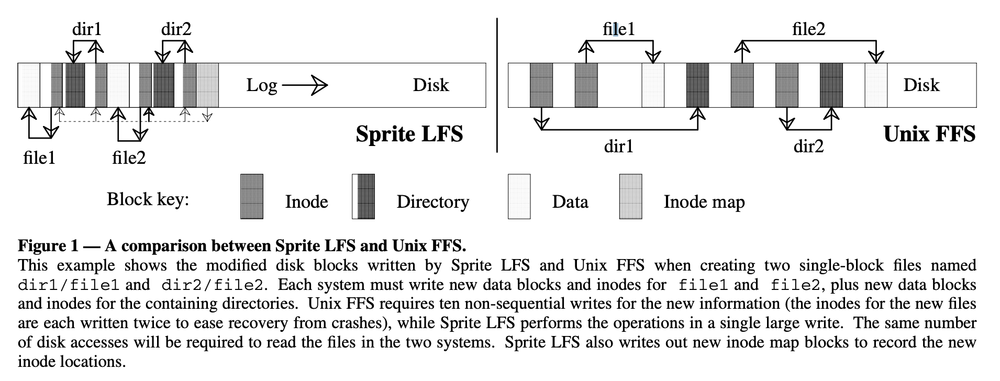
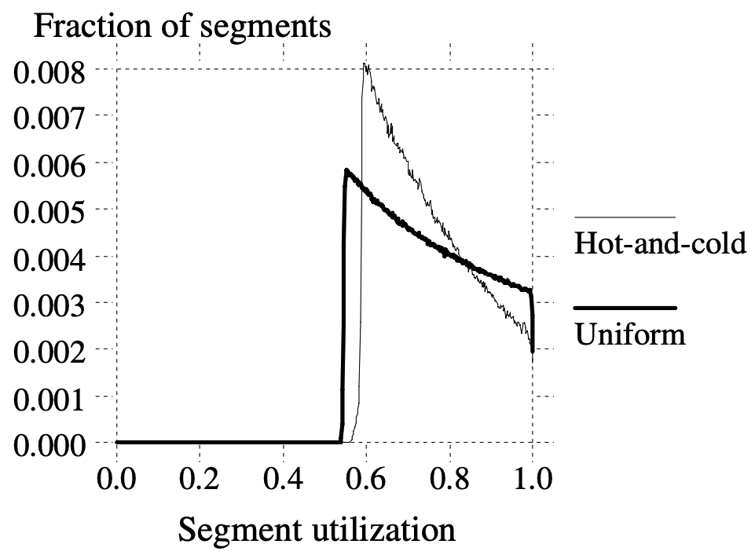

본 작물은 The design and implementation of a log-structured file system (SOSP '91) 논문을 읽고 정리한 글입니다.
별도의 명시가 없는 한, 본 글의 모든 그림은 위 논문에서 가져왔습니다.
본 문서는 아직 #draft 상태입니다. 읽을 때 주의해 주세요.
1. Abstract & Introduction
Problem Statement
- CPU 속도는 음청나게 빨라지는 반면, disk 속도는 거의 그대로이고, 따라서 disk 속도가 여러 application 에서 병목이 되고 있다.
- 이 문제를 해결하기 위해 저자들은 (특히 다수의 작은 파일들을 처리할 때 더 특출난) LFS 라는 새로운 file system 을 개발했다.
Log Structure
- 파일들은 메모리 상에 캐싱되기에 read 작업은 메모리 사이즈에 주로 영향을 받는다는 것을 전제로 깔고 간다.
- 이렇게 되면 (read 는 메모리에 더 의존하기 때문에) disk traffic 의 대부분은 write 가 차지하게 된다.
- LFS 는 모든 새로운 혹은 변경된 사항들을 log 의 형태로 sequential 하게 disk 에 저장한다.
- 이 방법을 사용하면 write performance 를 극적으로 늘릴 수 있고, seek time 을 거의 없애버릴 수 있다.
- 어떻게 이것이 가능한지는 뒤에 나올것이니 조급해지지 말어라
- 또한 이러한 sequential write 는 crash recovery 에도 도움을 준다.
- 기존의 UNIX file system 은 crash recovery 를 하기 위해 storage 전체를 다 훑어서 복구를 하지만, LFS 의 경우에는 log 의 마지막 일부분만 사용하면 되기 때문.
- 이것도 아마 뒤에 더 구체적인 설명이 나올 것이다.
- Log 를 사용하는 방법은 기존에도 있었지만, 기존에는 log 를 단순히 데이터의 임시 보관으로만 활용했고, 기존의 random write 방식을 메인으로 사용했다고 한다.
- 하지만 LFS 의 경우에는 모든 데이터를 log 로 저장하고, 다른 저장 방식은 없다.
Indexing Information
- 이 방식은 read 시에 성능 저하를 가져올 수 있다: new or updated data 가 log 에 저장되므로 이전에 write 된 데이터를 읽어오기 위해서는 옛날 데이터로 거슬러 올라가야 하기 때문.
- 하지만 LFS 에서는 이것을 indexing information 을 이용해 해결했다:
- 옛날 데이터로 선형적으로 거슬러 올라가며 원하는 데이터를 찾도록 하는 것이 아닌, 해당 데이터의 위치를 log 에 남겨 한번의 indirection 으로 바로 해당 데이터를 찾을 수 있게 한 것.
- 예를 들어보자면: A, B 중 B 만 변경되면 마지막 log 에는 B 의 변경사항만 적혀 있고 A 의 데이터를 읽기 위해서는 이전 log 를 봐야 한다.
- 하지만 만약에 마지막 log 에 A 데이터는 어디에서 확인할 수 있습니다 라는 indexing information 까지 적혀 있다면, 더 빠르게 해당 데이터를 읽어올 수 있는 것.
Segment, Segment Cleaning
- LFS 가 빠르고 효율적으로 작동하기 위해서는, storage 에 free space 가 많이 남아 있어야 한다.
- 하지만 LFS 의 경우에는 sequential write 를 하기 때문에, 아무런 조치도 취하지 않으면 free space 가 다 없어져 정상적으로 작동하지 않을 것이다.
- 이를 위해서 LFS 에서는 log 를 잘게 나눈 Segment 라는 단위와 이 segment 들을 정리해서 free space 를 확보하는 Segment Cleaning 이라는 방식을 사용한다.
- Segment Cleaning 을 통해 잘게 나뉘어진 segment 들을 압축해서 free space 를 확보하는 것
- 아마 이후의 log 에서 변경되어서 더이상 유효한 정보를 갖고 있지 않은 segment 들이 이때 정리될 것이다.
- 저자들은 여러 cleaning policy 들을 실험하였고, cost 와 benefit 에서 적절한 타협점을 찾은 효율적인 cleaning policy 를 찾아냈다고 한다.
- 결론부터 말하면 잘 변경되지 않는 데이터와 변경이 잦은 데이터들을 나눠서 cleaning 을 한다.
- Hot cold separation 과 유사한 방법인 셈.
Sprite LFS
- 저자는 Sprite LFS 이라는 프로토타입을 만들었고, Sprite Network Operating System 에서 실제로 사용하고 있다고 한다.
- 벤치마킹을 돌려본 결과, 다수의 작은 파일들을 write 하는 작업이 기존의 UNIX FS 에 비해 월등히 빨랐다고 한다.
- 이외의 read, large file write 작업의 경우에도 기존의 UNIX FS 와 비슷하거나 더욱 빠른 속도를 보여줬다고 한다.
- 다만 random write 이후 sequential read 를 하는 한가지 경우에 있어서만 UNIX FS 가 더 빨랐다고 한다.
- 실험 결과, LFS write operation 의 대역폭이 디스크 최대 대역폭의 65~75% 에 달하는 것으로 확인됐다.
- 나머지는 cleaning operation 에 사용됐다고 한다.
- 이것은 기존 UNIX FS 에서 write operation 대역폭이 5~10% 밖에 안나오는 것에 비하면 아주 극적인 성능 향상인 셈.
2. Design for file systems of the 1990s
- 파일시스템 디자인은 두가지 요소에 영향을 받는다:
- Technology: 하드웨어 측면에서의 기술의 발전
- Workload: Process 가 수행하는 작업의 특성
2.1. Technology
CPU
- 파일시스템에서 CPU 와 Disk, Memory 의 기술 발전은 아주 큰 영향을 가져온다.
- 지난 날들 동안 CPU 는 아주 빠르게 발전해 왔고, 이를 최대로 활용하려면 Disk 와 Memory 도 그에 맞는 속도로 발전해 와야 할 것이야
- 근데 특히 Disk 는 발전속도가 아주 더디고, 이것이 결국에는 발목을 잡고 있는 것이 현재 상황이라고 한다.
Disk
- Disk 가 그렇다고 해서 발전이 없는 것은 아니다; 이놈도 지난 세월동안 아주 많은 발전을 해왔다.
- 하지만 진행되온 주된 발전은 금액을 낮추고 용량을 크게 하는 것이었고, 속도를 더욱 빠르게 하는 것은 발전하긴 했지만 CPU 의 발전 속도를 쫒아가기에는 역부족이었다.
- 그 이유에 대해 좀 더 분석해 보자: 디스크의 성능을 높이는 것은 크게 (1) 전송 대역폭과 (2) 접근 시간과 관련이 있다.
- 이때 전송 대역폭의 경우에는 여러개의 disk (여기서 disk 는 HDD 내의 원판을 말하는 것인듯) 혹은 head 를 사용하는 방법으로 개선이 가능하다.
- 하지만 access time 의 경우에는 결국에는 disk 를 돌리고 head 를 움직이는 다소 기계적인 작업이기 때문에, 발전 속도에 제한이 있다.
- 따라서 만약 application 이 다수의 파일들을 seek time 을 곁들여서 접근해야 한다면, 해당 application 은 CPU 가 발전하면 뭐하노 데이터를 읽어오지를 못하는데
Memory
- Memory 같은 경우에는 발전을 거듭하며 크기가 점점 커지고 있다.
- Disk 에서는 속도에 비해 크기의 발전이 주되게 일어나는 것이 골칫거리였다면, memory 는 이 크기가 커지는 것이 전반적인 성능 향상까지 같이 이끌어 내게 된다.
- 이것은 메모리가 캐시로 사용되기 때문 - 현대의 FS 는 최근에 사용된 데이터를 메모리에 캐싱하는 방법을 사용하기에, 메모리의 크기가 커진다는 것은 그만큼 더 많은 데이터를 캐싱할 수 있다는 얘기와 같다.
- 이것은 두가지 영향을 가져온다.
- 첫째는, 더 많은 데이터를 메모리에 올려 놓을 수 있기 때문에, read 작업이 disk 에 덜 의존한다는 것이다.
- 하지만 write 의 경우에는 결국에는 disk 에 반영되기 때문에 상대적으로 disk 의존하는 비중이 크다.
- 둘째는, 메모리를 버퍼로 사용해 데이터들을 메모리에 모아 한번에 disk 로 write 할 수 있다는 것이다.
- 버퍼링은 더욱 더 효율적으로 write 할 수 있게 해준다.
- 이렇게 생각하면 된다: 만일 5MB 가 버퍼링되고 10MB 를 write 해야 한다면, 두번의 write 가 필요하고, write 할 위치를 seek 하여 write 를 한 후에는 새로운 위치를 seek 하여 이어서 write 해야 할 수도 있다. (즉, 2번의 seek)
- 하지만 10MB 가 버퍼링된다면 write 전 한번의 seek 으로도 가능하기에, 더욱 더 효율적이 되는 것
- 버퍼링은 더욱 더 효율적으로 write 할 수 있게 해준다.
- 물론 버퍼링이 항상 좋은 것은 아니다; 버퍼링을 하게 되면 crash 상황에서 데이터가 날아갈 가능성이 더 커지게 된다.
- 본 논문에서는 crash 에 대해 언제든지 예상치 못하게 발생할 수 있고, 이를 해결하기 위해 최대 분단위의 downtime 까지는 인정하는 것으로 가정했다고 한다.
2.2. Workloads
- 저자는 Workload 를 크게 두 분류로 나누어 접근했다: 크기가 작은 파일과 큰 파일
- 그리고 결론부터 말하자면, LFS 은 크기가 작은 파일의 성능 향상에 초점을 맞췄다고 한다.
Small files
- 크기가 작은 파일들은 FS 에서 다루기 까다로운 반면, 실생활에서는 아주 자주 사용되는 형태이다.
- 가령 사무실에서 사용되는 word processor 와 같은 파일들의 경우에도, 조사 결과 KB 단위의 아주 작은 파일들이었다.
- 이 파일들은 small random IO 를 유발하고, 이들을 생성하거나 삭제하는 것도 파일의 metadata (inode 와 같은) 를 건드려야 하기 때문에 마찬가지로 small random IO 가 발생한다.
Large files
- 슈퍼컴퓨팅 분야에서는 큰 사이즈의 파일들에 대한 sequential access 가 필요한데, 이들의 성능 저하는 file system design 에 있지는 않다.
- 이러한 파일들을 인접한 cylinder 에 배치해 적은 seek time 으로 sequential 하게 접근하게 해주는 기술은 이미 존재한다. (아마 FAST FS 도 이것의 일종일듯)
- 이들의 성능을 좌우하는 것은 대역폭과 많이 연관되어 있고, 따라서 LFS 에서는 큰 파일들에 대한 성능 향상은 하드웨어에 맡기고, 작은 파일들에 대한 성능 향상에만 집중했다고 한다.
2.3. Problems with existing file systems
- 당시의 FS 는 두 가지 문제점이 있었다고 한다:
- 데이터들이 디스크에 너무 흩뿌려져 있어서 small access 가 많이 발생했고
- Write 가 다소 동기적으로 (synchronous) 수행된 것
- 저자는 UNIX FFS 를 대표적인 prior work 으로 잡고 비교를 했으나, 다른 FS 에도 동일하게 적용되는 문제점이었다고 한다.
Spread information
- 위에서 말한 것 처럼, 당시의 FS 들은 데이터들을 디스크에 흩뿌려 놓았고, 따라서 small access 가 너무나 많이 발생했다고 한다.
- 가령 UNIX FFS 의 경우에는 cylinder group 개념을 이용해 데이터들을 sequential 하게 배치하기는 하였으나, 다른 파일의 경우에는 (아마 다른 cylinder group 에 배치되어?) 물리적으로 다른 위치에 배치되도록 하였다.
- 또한 UNIX FFS 는 inode 와 (directory 내에 있는) file name, file content 를 모두 격리시켜 놓았다.
- 따라서 UNIX FFS 에서는 하나의 파일을 생성하기 위해서는 적어도 5번의 access 가 필요하다.
- inode
- 파일 데이터
- directory entry
- directory inode
(하나는 모르겠음..)
- 따라서 UNIX FFS 에서는 하나의 파일을 생성하기 위해서는 적어도 5번의 access 가 필요하다.
- 따라서 small file 하나 를 생성할 때에는 max bandwidth 의 5% 밖에 사용하지 못하고, 나머지는 전부 seek time 에 소모된다.
Synchronous writes
- 나머지 하나의 문제는 write 작업이 synchronous 하게 이루어진다는 것이다.
- 좀 더 쉽게 말하면, 하나의 작업을 시작하기 위해서는 이전 작업이 끝나기를 기다려야 한다는 것이다.
- 반대인 asynchronous 는 write 작업을 background 에서 수행되도록 맡겨 놓고, 다음 작업을 받는 것을 의미한다.
- 또 다시 UNIX FFS 를 꺼내오자면 여기에서는 file data 는 asynchronous 하게 write 가 이루어지지만 inode 나 directory 같은 경우에는 synchronous 하게 이루어진다.
- 따라서 small file write 의 경우에는 어차피 file data 의 크기는 얼마 안되기 때문에 이러한 inode, directory 에 대한 synchronous write 에 모든 정신이 팔려버린다는 것.
- 이러한 단점때문에 결국에는 좋아진 CPU 성능이나 memory cache 의 장점들이 모두 쓸모 없게 되어 버린다.
- 심지어 NFS 의 경우에는 기존에는 없었던 synchronous 작업까지 추가했고, crash recovery 기능이 있기는 하지만 이 기능때문에 성능이 더욱 더 저하되는 등의 문제점이 있었다고 한다.
3. Log-structured file system
- LFS 의 위와 같은 문제점을 해결하기 위한 가장 핵심 키워드는 이것 두개이다:
- Memory cache 에 변경사항들을 sequential 하게 buffering
- 모든 변경사항을 한번의 writing operation 에서 디스크에 sequential 하게 write
- 이러한 방법을 이용해 LFS 는 random synchronous small write 를 sequential asynchronous large-amount write 로 변환하고, 결과적으로 대역폭을 최대로 활용할 수 있게 한다.
- 원리는 간단하긴 하지만 이로인해 발생하는 두가지 문제점이 있고, 이들을 3번 섹션 에서 다루고자 한다.
3.1. File location and reading
- Log-structured 에서는 새롭거나 변경된 데이터가 log 에 기록되기 때문에 log 에서 원하는 데이터를 읽어들이기 위해서는 선형 탐색 (아마 최신 log 부터 거슬러 올라가는 방식으로) 을 해야 될 것 같으나, LFS 는 그런식으로 구현되지 않았다.
- LFS 는 기존의 FFS 와 거의 비슷하거나 조금 더 빠르게 데이터를 읽어들이는 것을 목표로 한다.
- LFS 에서 random access read 를 지원하기 위해 도입한 것이 index structure 이다.
Index structure - inode map
- 일단 LFS 나 FFS 나 기본적인 데이터 구조는 동일하다:
- 동일하게 inode 를 사용하고,
- 여기에는 권한같은 metadata 와
- direct, indirect block 들의 주소가 저장됨
- 따라서 inode 를 찾은 이후에는 (direct 혹은 indirect block 을 따라가서 read 하면 되므로) IO 횟수는 LFS 나 FFS 나 동일하다.
- 그럼 이제 LFS 의 read 성능을 FFS 와 비슷하게 유지하려면 inode 를 어떻게 찾냐가 관건일 것이다:
- 일단 FFS 에서는 inode 의 위치가 정해져 있었다. inode number 를 이용해 간단한 계산으로 inode 의 주소를 계산해 낼 수 있었다.
- 하지만 LFS 에서는 inode 가 정해진 위치에 저장되지 않고 log 내의 어딘가에 저장된다.
- 이것이 LFS 에서 inode map 을 도입한 이유이다:
- ==inode map 은 file id number 와 inode 주소를 연결지어 놓은 테이블==이다.
- 따라서 file id number 를 알면 inode map 을 통해 inode 가 어디에 있는지 바로 알 수 있다.
- 그럼 이 inode map 은 어디에 있는가
- 일단 이놈은 block 단위로 쪼개어져 log 에 포함되게 되고
- 이 inode map 을 구성하는 block 들의 위치는 Checkpoint Region 이라 불리는 log 밖의 고정된 위치에 저장되게 된다.
- inode map 은 생각보다 작고, 따라서 (물론 전부가 memory 에 올라가지는 못하더라도) inode map 의 active portion 1 은 memory 에 캐싱되어 inode map 을 접근하는 과정은 disk 에 거의 접근하지 않는다고 한다.
- 정리하자면, checkpoint region 을 통해 inode map 의 block 을 찾고, 이걸 통해 inode 를 찾은 후에는 FFS 와 동일하게 작동하는 것이다.
- 아래 그림은 LFS 와 FFS 의 작동 data lookup 과정을 그린 것이다.
- LFS 에서 inode map 으로 inode 를 찾아가는 점선 화살표를 제외하면 양쪽은 동일한 과정을 거쳐서 data block 을 찾게 된다.
- 하지만 차이점이라면, FFS 보다 LFS 가 더 공간을 컴팩트하게 활용하고 있다는 것이다.

3.2. Free space management: segments
- 시간이 흐르면 log 가 점점 쌓여서 더 이상 공간이 없게 되고 이때 free space 는 유효한 데이터와 더불어 삭제되었거나 변경된 파일들로 채워지게 된다.
- 따라서 모종의 작업을 하여 이 free space 를 확보하는 것이 필요하다.
- 이것을 위해서는 Threading 과 Copying 두가지 방법을 사용할 수 있다고 한다.
Threading

- 위 그림에서 New data block 이랑 Previously deleted block 이 잘 구분 안되긴 한데
- Threading 이란 live data 를 그냥 냅둔 상태로 sequential write 시에 live data block 을 만나면 건너뛰는 것이다.
- 그리고 이때 log block 사이의 pointer 는 유지되어 crash recovery 에 사용된다 2.
- 장점은 당연히 cost 가 적다는 것이다: 데이터를 복사하는 과정이 없기 때문에 당연히 적은 비용으로 수행할 수 있다.
- 단점은 benefit 이 적다는 것이다: live data block 이 모여있지 않고 듬성듬성 있기 때문에, free space 들이 파편화되게 되고, 따라서 큰 파일을 write 하는 것이 불가능하거나 3 기존의 FS 에 비해 성능 개선이 많이 이루어지지 않게 된다.
Copying

- 다음 방법은 Copying 으로, 이것은 live data block 들을 압축하여 log 의 시작점으로 옮기는 방법을 의미한다.
- 물론 log 시작점이 아니라 다른 FS 나 다른 LFS 로 옮길 수도 있다고 한다.
- 장단점은 Threading 의 반대이다.
- 즉, 장점은 live data 들이 압축되어 log 시작점이 모이기 때문에 비교적 큰 크기의 free space 를 확보하는 것이 가능하기에 성능 저하가 적은 (benefit 이 많은) 것이지만
- 단점으로는 live data 를 복사해야 되기 때문에 여기서 발생하는 overhead 가 있어 cost 가 크다는 것이다.
- 특히 long-lived data 에 대해서는 이러한 문제가 더 심하게 발생한다 4.
Hybrid (Segment)
- LFS 는 Segment 라는 단위에 대해 위 방법 둘 모두를 이용해서 trade-off 상황에 대한 타협점을 찾는다.
- 디스크 전체를 고정크기에 sequential write 만 가능한 Segment 로 나누고, segment 내에서는 copying 을 수행한다.
- 즉, segment 내의 live data 들은 압축되어 복사된다.
- 그리고 segment 외부적으로는 threading 을 수행한다.
- 만일 하나의 segment 에 대해 live data 로 전부 채워져 있다면, 해당 segment 는 건너뛰는 것.
- Segment 는 크기가 꽤 크다. (512KB ~ 1MB) 따라서 segment 에 대한 seek time 은 segment 의 데이터를 read/write 하는 시간에 비해 상대적으로 작아지고, 따라서 대역폭을 최대로 활용할 수 있게 된다.
3.3. Segment cleaning mechanism
- Segment 에 대해 copying 작업을 수행하는 것을 Segment Cleaning 이라고 한다.
- 세 단계에 의해 이루어 진다:
- 여러 개의 segment 들을 메모리로 읽어들인 뒤,
- 그 안에서 live data 를 선별해 내고
- 더 적은 수의 segment 들로 이 live data 를 복사해 넣고 읽어들인 segment 들은 clean 으로 마킹해 놓는다.
Segment summary information
- Segment cleaning 과정에는 이 두 문제점이 있다:
- 어떻게 live data 를 구별해 낼 것인가?
- 어떻게 live data 의 소속 (해당 live data 를 소유한 file) 을 알아내 주소가 변경되었음을 inode 에 반영할 것인가?
- LFS 에서는 이 문제를 segment 별로 Segment Summary Information 을 유지하는 것으로 해결했다.
- 여기에는 segment 의 block number 와 file number 간의 mapping 이 되어 있다.
- 이렇게 하면 일단 문제점 (2) 는 해결된다: block number 를 통해 file number 를 알 수 있고, 따라서 inode map 을 통해 inode 를 찾을 수 있게 됨.
- 이 segment summary information 으로 live data 를 식별해 내는 것은 다음과 같이 할 수 있다.
- 우선 이것으로 한 block 에 대한 inode 를 찾은 다음
- inode 의 direct, indirect block 이 해당 block 을 여전히 참조하고 있는지 확인하면 되기 때문.
- Segment summary information 은 segment 당 하나씩 들어가고, 가끔 하나 이상이 들어갈 때도 있다.
- 이것은 segment 하나를 채우기 위해 하나 이상의 log 가 필요할 때 인데,
- Memory cache 로 부터 들어온 dirty block 들로 하나의 segment 를 채우기는 힘들 때 이런 일이 발생한다고 한다 5.
- Segment summary information 은 write 작업에 부과하는 overhead 도 적고, crash recovery 등에서도 사용될 수 있어 아주 유용하다고 하네
Inode map version number field
- Segment summary information 으로 live data 를 선별해 내는 과정은 inode map 에 version number 필드를 추가하는 것으로 최적화가 가능하다.
- 해당 필드의 값은 파일이 삭제되거나 파일 사이즈가 0이 되면 증가한다.
- 왜인지는…#draft
- File number 와 version number 를 합친 것을 UID (Unique ID) 라고 하고, 이놈을 이용해 liva data 를 더욱 빠르게 선별해 낼 수 있다.
- 일단 segment summary information 에 file number 가 아닌 UID 와 block number 를 매칭시켜 놓는다면
- 해당 block 이 어떤 file 의 어떤 version 에 mapping 되어 있는지 저장되어 있는 셈이다.
- 이때 inode map 에 있는 file number + version number 와 비교해 봤을 때, 일치한다면 변경점이 없다는 의미이기 때문에 live data 인 것이고,
- 반대로 일치하지 않는다면 변경된 것이 있다는 의미이기 때문에 live data 가 아닌 것으로 판단할 수 있는 것.
- 여기까지 본다면 LFS 에는 free space 를 위한 list 나 bitmap 이 없다는 것을 알 수 있을 것이다.
- 얘네들은 추가적인 memory 와 저장공간을 필요로 하고 crash recovery 를 어렵게 만들기에, 이것을 없애는 것은 분명한 개선이다.
- 만일 쟤네들이 있었다면, 이것의 crash recovery 를 위한 추가적인 parity 도 필요했을 것이다.
3.4. Segment cleaning policies
- Segment Cleaning 을 위해서는 다음의 네 가지 정책이 필요하다:
- 언제 segment cleaning 을 진행할까? 낮은 우선순위의 background 로? 아니면 밤에? 아니면 공간이 없을 때?
- 한번에 얼마나 많은 segment 들을 clean 해야 할 까? 더 많이 clean 하면 당연히 free space 도 많이 생기겠지만 그만큼 cleaning cost 도 늘어날 것이다.
- 어떻게 cleaning 할 segment 를 선정할까? 가장 파편화가 많이 진행된 segment 가 적절해 보이지만 이것이 정답은 아니었다.
- 새로운 Segment 내의 block 들은 어떻게 배치할까? 지역성을 살려서? (가령 같은 디렉토리의 파일 등) 아니면 마지막 변경 시각을 기준으로 정렬해서?
- 저자는 (1) 번과 (2) 번 policy 에 대해서는 크게 다루지 않았다고 한다. 얘네들은 LFS 의 성능에 크게 영향을 끼치지 않았기 때문.
- 일단 segment cleaning 은 clean segment 가 10 개정도보다 적어지면 진행한다.
- 그리고 한번에 10 개정도씩 cleaning 을 진행하고, 50~100 개정도의 clean segment 가 확보되면 멈춘다.
- 반면에, (3) 번과 (4) 번 policy 에 대해서는 LFS 의 성능과 직결되었기 때문에, 면밀한 분석을 진행했다고 한다.
Write Cost
- 일단 이름에서부터 알다시피 클수록 안좋은 값이다.
- 정의는 “새로운 데이터 1 바이트를 write 하는 데 걸리는 시간” 이다.
- “시간” 이기 때문에 cleaning overhead 뿐 아니라 seek time 등 모든 것을 포함한 모든 것이 고려된다.
- 이 값은 대역폭으로 환산하면 어떤 값인지 더욱 이해가 잘 될것이다: 정도로 대역폭으로 환산된다.
- 즉, 가 1 이라면 new data write 에 100% 의 대역폭을 활용하고 있는 것이고
- 10 이라면 10% 의 대역폭을 활용하고 있는 셈.
- 나머지는 cleaning 등에 사용되고 있는 것이다.
- 결론부터 말하자면, LFS segment cleaning 의 는 다음과 같이 계산된다:

- 이제 왜 저렇게 되는지 살펴보자.
- LFS 의 경우에는 segment 의 크기가 크기 때문에, seek time 과 latency time 등은 무시된다.
- 위에서 말한 것처럼, r/w 에 걸리는 시간이 더 크기 때문.
- 따라서 write cost 를 다음과 같이 추산할 수 있다.
- 에서
- 에 (1) seek time, (2) latency time, (3) cleaning 에서의 segment 를 읽는 시간, (4) cleaning 에서의 live data 를 write 하는 시간, (5) 새로운 데이터에 대한 write time 이 포함되는데,
- (1) 과 (2) 는 무시할 수 있으므로 나머지 (3 + 4 + 5) 를 새로운 데이터에 대한 write 시간 (5) 로 나눈 값이 이다.
- 즉, 가 되는 것.
- 여기서 segment utilization factor 를 라고 하자.
- 이 값은 cleaning 을 하려고 하는 segment 들에 대해 live data 가 차지하고 있는 비중 (0 ≤ ≤ 1) 이다.
- 즉, 이 값은 cleaning 이후에 남아있게 되는 data 의 양이라고 생각할 수 있다.
- 그리고 segment 들의 byte 크기를 라고 하자.
- 그럼 각각의 값들은 와 으로 표현된다 6:
- : cleaning 작업에 segment 전체를 읽는다는 가정하에, byte 를 읽어들임
- : cleaning 작업에서 live data 만이 복사되어 write 되기 때문에, segment 크기에서 live data 가 차지하는 비중만이 write 됨
- : cleaning 의 결과로 확보된 나머지 공간에 새로 write 가 가능하기 때문에 전체 사이즈에서 live data 가 차지하는 사이즈를 뺌
- 결국에는 위의 그림과 동일하게 되는 것이다.
- 다만, 몇가지 예외? 랄 것이 있다.
- 만약 live data 가 하나도 없을 때에는 cleaning 이 발생할 필요가 없기 때문에, 는 1이다.
Choosing a segment to clean

- 위 그래프는 FFS today (기존의 UNIX FFS) 와 FFS improved (logging 및 delay writing 을 도입한 UNIX FFS 의 개선판) 에서의 write cost 에 대한 그래프이다
- 실선이 LFS 에 대한 - 관계
- 굵은 점선은 FFS today 에 대한 - 관계
- 얇은 점선은 FFS improved 에 대한 - 관계
- 보면 FFS today 는 write cost 가 10 (대역폭이 10%) 정도 나오고, FFS improved 는 write cost 가 4 (대역폭이 25%) 정도 나오는 것을 볼 수 있다.
- 이것을 기준으로 LFS 에서 어떤 segment 를 cleaning 할 지 정해보자.
- 만약에 LFS 가 FFS today 보다 나은 성능을 보여주고 싶다면, 가 인 segment 를 clean 하면 될 것이다.
- 그리고 FFS improved 보다 나은 성능을 보여주고 싶다면, 가 인 segment 를 clean 하면 된다.
- 근데 여기서 관심을 가지는 utilization 이 disk 전체가 아니라 cleaning 하고자 하는 segment 이기 때문에, 어떤 segment 는 평균보다 낮은 utilization 을 보여줄 수도 있고, 이때에는 제일 under-utilized 한 segment 를 선택할수도 있다 한다…
- 여기에서도 cost 와 benefit 사이에 trade-off 가 있다.
- Utilization 이 낮아지면 대역폭은 올라가 더 성능은 좋아지지만
- 말 그대로 사용하는 비율이 적어지는 것이기에 저장할 수 있는 데이터의 양은 더 적어진다.
- 하지만 이러한 경향성은 LFS 에만 적용되는 것은 아니다; FFS 도 최대 90% 만 사용하게 하는 제한이 걸려 있다.
- 이 trade-off 를 상쇄하기 위해서 특정 segment 는 거의 빈 상태로 놔두고 나머지 segment 들을 거의 다 채울 수 있게 하는 bimodal segment distribution 전략을 취할 수 있다. (이 내용이 다음 문단 부터 나온다.)
3.5. Simulation results
실험 방법
- 저자는 locality 를 고려했을 때 어떤 cleaning policy 를 선택해야 cost 가 적게 나오는지 분석하기 위해 간단한 시뮬레이터를 만들었다고 한다.
- 실험 환경은 실제 사용환경보다는 더욱 더 혹독하지만 locality 분석에 많은 도움이 되었다네
- 이 실험은 다음과 같은 방식으로 진행됐다:
- 디스크 용량의 일정 비율 (Disk capacity utilization) 이 채워지도록 FS 에 4KB 파일들을 생성한다.
- 만일 디스크 용량이 2MB 이고, disk capacity utilization 을 0.5 로 정했다면, 1MB 를 채우기 위해 4KB 파일을 250개 생성한 것.
- 해당 파일들을 지속적으로 overwrite 한다.
- Overwrite 로 인해 모든 clean segment 들이 소진된다면, segment 들이 다시 확보될때까지 segment cleaning 을 한다.
- Write cost 가 안정화되면 실험을 종료한다.
- 위의 작업을 disk capacity utilization 을 변화시키며 반복한다.
- 디스크 용량의 일정 비율 (Disk capacity utilization) 이 채워지도록 FS 에 4KB 파일들을 생성한다.
- 이때, overwrite 와 segment cleaning 은 아래와 같은 두 가지 방식 (Uniform, Hot-and-cold) 을 이용한다:
| Uniform | Hot-and-cold | |
|---|---|---|
| Access rate | 모든 파일에 대해 동일한 확률로 overwrite | 차등적인 확률로 overwrite (10% 의 파일들에 대해서는 90% 의 확률로 overwrite 하고 - hot, 나머지 90% 의 파일들에 대해서는 10% 의 확률로 overwrite 함 - cold) |
| Cleaning policy | Greedy - Utilization 이 가장 낮은 segment 부터 cleaning | (마찬가지로 greedy 하게) |
| Live block reorganize | Read 한 순서 그대로 write 함 | Age 에 따라 정렬해서 write 함 |
- 여기서 hot-and-cold 에서 age 에 따라 정렬해서 write 하게 되면 자연스럽게 segment 단위로 hot data 와 cold data 가 분리되는 효과를 가진다.
- 즉, hot segment 와 cold segment 가 나뉘게 되는 것
- 추가적으로, 편의를 위해 다음의 것은 고려하지 않았다고 한다..
- read traffic
- cold start 7
실험 결과…

- 일단 각 선들이 어떤 의미를 가지는지 부터 살펴보자.
- 점선 (널찍): FFS today - 기존의 UNIX FFS
- 점선 (촘촘): FFS improved - 기존의 UNIX FFS 에서 조금 더 개선된 버전
- 실선 (얇): No variance 방식 - 모든 segment 들이 동일한 utilization 을 가진다고 가정했을 때, write cost 의 변화
- 실선 (굵): Uniform 방식을 사용했을 때
- 점선 (널찍-촘촘): Hot-and-cold 방식을 사용했을 때
- 그래프가 오른쪽 아래로 깔릴수록 더 좋다 - disk capacity util 이 늘어나도 성능 방어를 잘 해 write cost 가 많이 늘어나지 않는다는 의미이기 때문
논문에서의 75%, 55% 의 의미
- 본문에는 “For example, at 75% overall disk capacity utilization, the segments cleaned have an average utilization of only 55%.” 라는 문장이 나온다.
- 이것은 말 그대로 disk capacity util 을 75% 로 설정했을 때 segment util 은 그보다 작은 55% 가 나온다는 소리이다. 즉, segment util 은 적을수록 write cost 가 적어지므로 더 좋다는 의미.
- 근데 저 수치는 어떻게 나온 것이냐: 75% 의 disk capacity util 일때 LFS Uniform 의 write cost 값을 No variance 그래프를 이용해 util 로 바꿔보면 55% 가 나온다. (위 그래프에서 빨간색 점선)
- 일단 uniform 방식이나 hot-and-cold 방식을 이용할 때나 모두 no variance 일때보다 write cost 가 적게 나왔다.
- Util 이 20% 아래로 떨어졌을 때에는 write cost 가 2 아래로 떨어진다; 이것은 live block 이 아예 없는 segment 가 존재해 cleaning 이 발생하지 않아 write cost 가 1 이 되기 때문.
- 근데 여기서 문제점은 locality 가 고려되면 더 성능이 좋아질 줄 알았는데 locality 가 고려되지 않은 uniform 이 더 결과가 좋았다.
- 즉, 같은 data capacity util 기준 uniform 에서보다 hot-and-cold 에서 write cost 가 더 높게 나왔다.
결과가 예상대로 나오지 않은 이유
현상 - 많은 cold segment 들이 cleaning 되고 있지 않다.
- Greedy policy 에서는 segment 의 util 이 다른 segment 보다 작아져야 cleaning 이 진행된다.
- 따라서 cold segment 를 포함한 모든 segment 의 util 이 cleaning threshold 까지 떨어지게 된다.
논문에서의 "Cleaning Threshold" 의 의미
- 여기서 cleaning threshold 는 특별하게 설정된 값은 아닌 것으로 보인다.
- Greedy policy 에서 cleaning 의 대상으로 선정되는 segment 의 util 최소값이 threshold 인 것.
- 하지만 cold segment 는 util 이 아주 천천히 떨어지기 때문에, 대부분의 cold segment 들이 threshold 근처에서 cleaning 되지 않고 오랜 기간 머물게 된다.
- 다르게 말하면, cold segment 가 hot segment 보다 utli 이 천천히 떨어지기에 cleaning 대상 선정 경쟁에서 밀리게 되는 것.
- 결과적으로 cold segment 들은 outdated block 들을 오랜 기간동안 품고 놔주지 않게 된다.
- 이것을 그래프로 확인해 보면 아래와 같다:

- 위 그래프는 모든 segment 들에 대한 segment util 별 분포도이다.
- 뭐 대략 특정 segment util 을 갖는 segment 의 개수 (물론 개수는 아니긴 하지만 8) 라고 생각하고 넘어가자
- Disk cap util 이 75% 인 상황을 시뮬레이션하던 중에, cleaning 이 시작되었을 때 집계한 것이라고 한다.
- 그래프를 보면 seg util 이 55% 정도가 될 때 cleaning 이 시작되는 threshold 가 형성된다고 볼 수 있는데
- Uniform 일 때보다 hot-and-cold 일 때 threshold 근처에 더 많은 segment 들이 몰려있는 것을 볼 수 있다.
- hot segment 보다 cold segment 의 개수가 훨씬 더 많고,
- 이런 많은 cold segment 들이 threshold 근처에 잔류하고 있기 때문에 위와 같은 모양이 되는 것.
이런 현상이 어떻게 결과로 이어질까?
- Cold segment 와 hot segment 의 util 감소 속도를 생각해 보면, cold 와 hot 에서의 outdated block 이 가지는 가치가 다르다는 것을 알 수 있다.
- Hot 의 경우에는 어차피 outdated block 을 clean 해 봤자 조만간 다시 write - overwrite 되어 outdated 될 것이고
- Cold 의 경우에는 outdated block 가 잘 생성되지 않고 해당 outdated block 을 clean 했을 때 다시 outdated 로 돌아오기에는 시간이 꽤 걸릴 것이기 때문.
- 하지만 가치가 낮은 hot segment 들의 outdated block 이 경쟁에서 이겨 지속적으로 cleaning 되고 있으니 더 안좋은 결과가 나오는 것 9.
이것을 어떻게 하면 해결할 수 있을까?
- 결론적으로는, block 의 stability 가 value 에 영향을 미치고, 이러한 value 를 고려해서 cleaning 을 진행해야 한다.
- Value 가 높은 cold segment 의 outdated block 은 조금만 생겨도 cleaning 을 하고, value 가 낮은 hot segment 의 outdated block 은 많이 생길때 까지 기다렸다가 cleaning 을 하면 되는 것
- 하지만 실제 상황에서는 미래의 block 접근 패턴을 알기 어렵기 때문에, stability 을 산출하는 것은 어려움이 있다.
- LFS 에서는 stability 의 척도로 age 를 사용한다.
- 즉, segment 의 block 나이가 많을수록 앞으로도 변경 가능성이 낮다고 보는 것.
- 이것을 수치적으로 policy 에 반영한 것이 Cost-Benefit Policy 이다.
Cost-benefit policy
- Cost-benefit policy 에서는 아래의 수식으로 cleaning 할 segment 를 선정한다.

- 이 수식의 의미를 씹뜯맛 해보자.
- 일단 cost-benefit policy 에서는 benefit 이 cost 에 비해 큰 순서대로 cleaning 을 진행한다.
- 즉, 의 값이 큰 순서대로 cleaning 을 진행하는 것.
- 우선 부터 살펴보자면,
- 한번의 cleaning 에 많은 free block 들이 생성될 때, 즉 outdated block 이 많을 수록 cleaning 의 효과가 좋을 것이다.
- 이것은 segment 에서 live block 이 차지하는 비중을 뺀 것이기에, 로 계산할 수 있을 것이다.
- 또한, 위에서의 가정에 따라 나이가 많을 수록 stability 가 높아져 cleaning 의 효과도 좋을 것이다
- 이것은 값 으로 반영되고, 해당 segment 에서 가장 최근의 변경 시간을 기준으로 한다.
- 따라서 가 된다.
- 한번의 cleaning 에 많은 free block 들이 생성될 때, 즉 outdated block 이 많을 수록 cleaning 의 효과가 좋을 것이다.
- 그리고 를 살펴보자.
- 는 cleaning 과정 중에 수행되는 read 와 write 의 양으로 계산된다.
- Cleaning 중에는 segment 전체를 read 하고 (), live block 을 write 할 것이기에 (), 이 둘을 더한 값 () 가 가 된다.
- 는 cleaning 과정 중에 수행되는 read 와 write 의 양으로 계산된다.
- 이렇게 함으로써 cold segment 는 가 올라가게 되어 가 작아도 (즉, seg util 이 높아도) cleaning 대상으로 선정되게 된다.
재실험
- Greedy 대신 cost-benefit policy 를 적용한 결과, 성능이 눈에 띄게 좋아졌다:
- Cleaning policy 만 변경되었고, reorganize policy 는 age-sorting 으로 동일하게 유지되었다.

- 성능 좋아졌다는 것 이제 말 안해도 아시겠죠?
- 그리고 이때 segment 분포는 다음과 같았다.

- 보면 cold segment 는 seg util 75% 정도에서 cleaning 이 되었고, hot segment 는 15% 정도에서 cleaning 이 되는 것을 확인할 수 있었다.
3.6. Segment usage table
#draft 입니다.
- Cost-benefit policy 를 지원하기 위해, Segment Usage Table 이 추가되었다
- segment usage table 에는 segment 의 live byte count 와 last modified time 이 들어간다
- 이 값들은 segment 에 write 되기 시작할 때 채워지고, 데이터가 삭제/변경되며 live byte count 가 내려간다
- live byte cound 가 0 이 되면 clean 없이 사용 가능
- segment usage table 의 block 들은 log 에 저장되고 checkpoint 에 해당 block 들이 어디에 있는지 저장된다
- Segment summary information 에는 가장 어린 block 의 나이를 기록한다.
- LFS 에서는 file 을 block 단위로 modify time 을 체크하지는 않는다.
- 대신 파일 전체 단위로 modify time 을 체크하기에 전부가 바뀌는 것이 아닌 일부 block 만 바뀌는 경우에는 이 시간이 변경되지 않는다.
- 따라서 추후에는 block 단위 modify time 을 넣으려고 한다고 한다.
4. Crash Recovery
#draft 입니다.
- 일반적으로 crash 가 발생하게 되면 reboot 중에 이것을 다 고치게 되는데
- Logging 기능이 없던 UNIX FS 의 경우에는 어쩔 수 없이 모든 metadata 를 뒤지며 파일이 정상적으로 존재하는지, 누락된 데이터는 없는 지 등을 체크한다.
- 하지만 이것은 몇십분이나 되는 시간을 먹게 되는 문제점이 있었다
- 하지만 LFS 에서는 마지막 로그에 마지막 작업이 남아있기 때문에 문제가 생겼을 만한 데이터의 범위를 쉽게 좁힐 수 있고, 따라서 빠르게 복구가 가능하다
- Crash recovery 를 위해서는 checkpoint 와 roll-forward 기술이 사용된다.
4.1. Checkpoints
#draft 입니다.
- Checkpoint 는 한 시점에서의 로그를 가리키고, 이 시점에서는 모든 FS 의 구조와 데이터들이 일관되고 완료되었다는 의미를 가진다.
- 말이 좀 모호하긴 한데 이상하게 생각할 것은 없다; 그냥 언제든 이 시점으로 돌아와도 정상작동한다고 정도로 생각하자
- 모든 변경사항들을 log 에 적고
- 위에서도 여러번 언급한 checkpoint region 을 디스크의 특정한 위치에 적는다.
- inode map, segment usage table 들의 block 위치
- 현재 시간
- 마지막 segment 의 위치
- 재부팅 중에 이 checkpoint region 을 읽어서 메인 메모리 데이터 구조를 초기화함
- HA 를 위해 두개의 checkpoint region 을 갖고 있다
- checkpoint operation 에서 두개의 checkpoint region 을 바꾼다?
- checkpoint time 은 checkpoint region 의 마지막 block 에 있기 때문에 checkpoint operation 이 실패할 경우 이 시간이 업데이트되지 않는다
- checkpoint operation 에서는 두 checkpoint region 을 모두 확인하고 더 일찍 생성된 놈을 사용한다.
- 주기적, fs unmount, system shutdown 때 이 checkpoint 를 생성한다
- 이 주기가 짧으면 recovery 시 더 최신의 checkpoint 가 사용되기에 더욱 신뢰성이 있지만, 생성의 오버헤드가 있고 주기가 긴 경우에는 반대
- 보통 LFS 에서는 30초로 설정
- 이것도 너무 길다
- 대안으로는 특정 양의 새로운 데이터가 작성되었을 때 수행하는 것
- 이것은 recovery time 을 일정하게 유지하고 checkpoint overhead 를 줄일 수 있다
4.2. Roll-forward
#draft 입니다.
- 문제가 생겼을 때 재부팅을 해서 checkpoint 로 돌아가는 것은 간단하고 빠른 해결방법이지만 checkpoint 이후의 데이터는 손실될 가능성이 있다
- 따라서 마지막 checkpoint 이후의 log 를 보면서 추가적인 복구를 하는 것이 roll-forward 이다
- segment summary information 을 보면서 최근에 write 된 block 을 찾고
- 만약 해당 block 이 inode 라면 그것을 inode map 에 추가한다
- 이것은 해당 inode 와 연결된 data block 까지 복구되는 효과를 가진다
- 만약 해당 block 이 data block 이고, 연결된 inode 가 없다면 해당 write 가 완료되지 않은 것으로 간주해 복구하지 않는다. (아무짓도 안함)
- roll-forward 작업에서는 checkpoint region 의 segment usage table 의 utilization 값도 재조정한다.
- checkpoint 이후에 추가된 데이터에 대한 segment util 은 0으로 표기되어 있을 것이기에, 재조정
- 마찬가지로 checkpoint 이후에 삭제/변경된 데이터에 대한 segment util 로 재조정
Directory operation log
#draft 입니다.
- directory 내용이 변경되었을 경우 LFS 는 Directory Operation Log 라는 특별한 record 를 log 에 추가한다.
- 어떤 작업인지 (operation code)
- 변경된 directory entry 의 위치 (directory 에 대한 inode number 및 directory 내에서의 index)
- 변경된 directory entry 내용 (파일의 inode number 및 파일 이름)
- 변경된 directory entry 에 해당하는 파일의 inode reference count
- 이 정보들을 이용해 directory entry 와 inode 간에 일관성을 유지한다.
- directory entry 변경에 대한 log 는 있지만 inode 나 directory block 가 없다면, roll-forward 시에 directory 혹은 inode 를 생성한다.
- 사실 생각해 보면 LFS 에서 journaling 이라고 할 만한 것이 이거밖에 없다; data block 의 경우에는 journaling 된 변경사항으로 복구하는 개념이 아닌 inode 에 매핑되어 있냐 등으로 버리거나 수락하거나 하는 식
- Directory 의 경우에는 sync 가 중요하기 때문에 얘에 대해서는 변경사항들을 logging 하는 것.
5. Experience with the Sprite LFS
- LFS 는 1989 년부터 개발되기 시작해 1990 년 중반에 이르러서는 Sprite network OS 에서 사용되기 시작했다고 한다.
- 1990년 후반에는 5개의 디스크 파티션을 관리하며 30여명의 사용자들이 사용했다.
- 이때 당시에는 위에 기술된 내용 중 거의 모든 기능들이 구현되었다고 한다.
- 단지 Roll-forward 만 구현이 안되어 있었다.
- 따라서 30초 간격으로 Checkpoint 를 생성하게 되고, Reboot 이후에는 checkpoint 에 저장된 내용외에는 전부 다 날라간다.
- 처음에 개발을 시작할 때에만 해도 LFS 의 구현이 FFS 보다 어려울 것으로 생각했지만, 결과적으로는 그렇지 않았다.
- Segment cleaning 의 구현이 까다롭기는 했지만, FFS 의 Bitmap 이 제거되었기에 이것이 상쇄되었고
- Checkpoint 와 roll-forward 는 FFS 의 crash recovery 를 위한 툴인 fsck 에 비해 구현이 어렵지 않았다고 한다.
- 실 production 환경에서는 성능 향상이 그렇게 드라마틱하게 나타나지 않았는데, 이것은 해당 환경에서 디스크에 병목이 생기는 것이 아닌 cpu, mem 측면에서 속도가 나오지 않았기 때문이었다고 한다.
5.1. Micro-benchmarks
- Sprite LFS 는 UNIX FFS 가 돌고 있는 SunOS 4.0.3 과 비교해서 벤치마크를 돌렸다.
- 물론 이 벤치마크들은 실 사용환경과는 차이가 있긴 하지만, 둘 간의 차이점을 극명하게 보여줬다고 한다.
- 작동 환경은:
- Sun-4/260 머신 + 32MB 메모리 + Wren 4 디스크 (1.3Mbyte/s 대역폭 + 17.5밀리초의 seek time)
- 각 디스크는 300MB 정도의 공간을 사용할 수 있도록 포맷
- SunOS 는 8KB block, LFS 는 4KB block + 1MB segment 를 사용
- 여러명의 유저가 사용
- LFS 의 경우 실험 도중에는 cleaning 이 작동하지 않음 - 최대의 성능이 나오는 상태
Small file benchmark

- 위 그래프는 작은 파일들을 create, read, delete 했을 때의 결과다.
- 왼쪽이 측정 결과, 오른쪽이 예상
- 보면 create 와 delete 시 SunOS 에 비해 10배정도 더 빨랐다.
- 또한 read 의 경우에도 더 빨랐다
- 생성된 순서로 read 를 했고, 여기 에서 설명한 것처럼 파일을 더 밀집해서 저장하기 때문
- Create 실험 당시에 LFS 는 총 실험 시간 중 17% 의 시간에 디스크 부하가 걸린 반면 CPU 는 최대로 사용했다.
- 반면, SunOS FFS 의 경우에는 85% 가 부하가 걸렸고, 디스크 대역폭의 1.2% 밖에 사용하지 못했다.
- LFS 의 실험 결과는 CPU 때문에 디스크에 17%밖에 부하가 걸리지 않았기에 만일 CPU 가 더 빨라진다면 성능이 더욱 개선될 것으로 보였다.
Large file benchmark

- LFS 는 small file 접근에 특화되어 있었지만, large file 에도 꿀리지 않는 성능을 보여줬다.
- Write 의 경우에는, random/sequential 모두 대역폭이 향상되었다.
- 특히 random write 에서 큰 성능 향상이 있었는데, 이것은 random write 를 LFS 가 sequential write 로 변환하기 때문이었다.
- 또한 Sequential write 에서 성능 향상을 보인 것은 SunOS FFS 에서는 각 block 에 대해 IO 가 처리되지만 LFS 에서는 memory 에 많은 블럭을 버퍼링해서 하나의 IO 으로 처리하기 때문이었다.
- 물론 최신의 SunOS 에서도 이러한 버퍼링 기능을 지원하고, 따라서 이 경우에는 성능이 비슷할 것이다.
- Read 의 경우에는 비슷한 성능을 보였으나 random write 이후 sequential read 를 하는 경우 (Reread sequential) 은 큰 성능 저하를 보였다.
- 이것은 LFS 에서는 이 상황에서 read seek 이 들어가기 때문이라고 한다 10.
FFS vs LFS
- FFS 의 locality 방식은 Logical locality 라고 할 수 있다:
- 이 말인 즉슨, FFS 에서는 사용자들의 일반적인 파일의 접근 패턴에 맞게 데이터를 인접하게 배치 하여 locality 를 구현한다.
- Directory 의 파일들을 하나의 cylinder group 에 넣어놓는 것을 예시로 들 수 있다: directory 의 파일들은 같이 접근하는 경우가 빈번하다는 접근 패턴을 이용한 것.
- 따라서 FFS 에서는 이 패턴에 맞게 데이터를 배치하기 위해 추가적인 write 도 감당한다.
- 반면, LFS 의 locality 방식은 Temporal locality 라고 할 수 있다:
- 즉, 한번 접근한 데이터는 곧 다시 접근할 확률이 높다는 가정 하에 생성/변경 시간이 유사한 데이터를 인접하게 배치 하는 locality 방식이다.
- 이런 방식의 차이는 둘 간의 장단점을 명확하게 보여준다 (!정리 필요):
- 만일 logical locality 와 temporal locality 가 일치된다면 (= 생성/변경된 순서대로 데이터에 접근 = 가령, sequential write + sequential read), LFS 와 FFS 는 동일한 성능을 보인다.
- 그리고 이것이 일치되지 않는다면 (= 생성/변경된 순서와 다르게 데이터에 접근 = random write + sequential read 혹은 sequential write + random read) 다른 성능을 보일 것이다.
- Sprite LFS 는 random write 를 sequential 로 변환하기에 더 효율적으로 처리한다.
- SunOS FFS 는 logical locality 를 위해 추가적인 비용을 들이며 random write 를 구현한다.
- 따라서 SunOS FFS 의 경우에 sequential re-read 를 더 효율적으로 처리하는 것
- 하지만 non-sequential read 가 non-sequential write 와 동일한 순서로 요청되면 (순서가 동일하기 때문에) Sprite LFS 가 더 효율적이다.
5.2. Cleaning overheads
#draft 입니다.
- 5.1 섹션에서의 벤치마크는 cleaning 이 돌지 않았기에, write cost 가 1인 최적의 상태를 보여줬다.
- 따라서 이 벤치마크는 “Optimistic benchmark” 라고 할 수 있다.
- 이에 대조적으로, cleaning 성능을 보기 위해 저자는 몇달에 걸친 실사용 벤치마크를 수행했다.
- 이 벤치마크는 “Pessimistic benchnark” 인 셈이다.
- 벤치마크는 다음과 같이 수행되었다고 한다:
- 5개의 디렉토리 모니터링
/user6: 사용자들이 사용하는 홈 디렉토리. 여기서 사용자들은 프로그램 개발, 문서작성, 시뮬레이션 등을 수행한다고 한다./pcs: 병렬처리 등을 연구하는 용도의 디렉토리./src/kernel: Sprite kernel 의 소스코드와 바이너리/swap2: Sprite client workstation (아마 시스템에 원격으로 접속해서 사용하는 것) 에 대한 swap 파일들. 여기에서는 virtual memory swap 파일이 주로 저장되고, 보통 큰 사이즈에 non-sequential access 가 수행된다./tmp: 임시 파일들
- 세팅 직후 초기상태에서의 영향을 없애기 위해 몇달 기다린 후 측정 시작해서 몇달에 걸쳐 측정함.
- 5개의 디렉토리 모니터링
- 벤치마크 결과 3.5 섹션에서의 시뮬레이션보다 더 좋았다고 한다.
- 벤치마크 동안 disk cap util 은 11%
75% 정도로 유지되었는데, 시뮬레이션 결과 에 비춰보면 write cost 는 2.53 정도로 예상되었다. - 하지만 실제로는 1.2~1.6 이라는 놀라운 결과가 나왔다.
- Segment cleaning 수행시, 절반이 넘는 segment 들이 완벽하게 비워진 상태로 종료되었고,
- 완벽하게 지워지지 않고 live block 을 담고 있는 segment 들도 seg util 이 평균 disk util 보다 훨씬 적었기에 이런 결과가 나온 것.
- 벤치마크 동안 disk cap util 은 11%
- 이러한 결과가 나온 이유는 다음과 같다:
- 일단 파일의 크기가 시뮬레이션에 비해 더 크다. 시뮬레이션의 경우에는 1 block 사이즈의 동일한 파일들이었다면, 실 사용에서는 수 block, 심지어 segment 보다도 큰 파일들이 생성되다 보니 통으로 write-overwrite-clean 되는 경우가 많았고, 더 좋은 locality 도 보여주었다.
- Cold 와 hot 간의 access 빈도가 더 극명했다. 시뮬레이션에서는 1:9 의 비율이었지만, 실제로는 아예 overwrite 가 되지 않아 clean 이 한번도 이루어지지 않은 파일들도 존재했다.
- 이 벤치마크를 통해 몇가지 추가적으로 개선할 수 있는 것들은:
- 밤이나 한가한 시간에 cleaning 을 진행해서 사용량이 많은 시간대에 cleaning 이 발생되지 않게 하는 방법도 가능
5.3. Crash recovery
#draft 이후 내용은 시간 없어서 패스..
5.4. Other overheads in Sprite LFS
6. Related work
7. Conclusion
Footnotes
-
이게 정확히 어떤 것을 의미하는 지는 잘 모르겠음. ↩
-
뭔소린지 모르겠다. ↩
-
이것도 모르겠다. Live data block 을 skip 한다면 결국엔 상관없는 것 아닌가. ↩
-
본문에서는 long-lived data 에서의 문제에 대해 다음과 같은 예시로 설명하지만, 뭔소린지 모르겠다: “In the simplest case where the log works circularly across the disk and live data is copied back into the log, all of the longlived files will have to be copied in every pass of the log across the disk.” ↩
-
어떤 상황인지 잘 감이 안오긴 한다 그쵸? ↩
-
어느샌가 time 에서 byte 로 단위가 바꿔었는데 그냥 그런갑다 하자. ↩
-
이게 뭔지는 잘 모르겠음. Disk capacity utilization 을 바꿨을 때 cold start 를 하지 않는다는 것인가? ↩
-
세로축 “Fraction of segments” 뭔지 모르겠음. ↩
-
많은 cold segment 가 threshold 근처에 잔류하는 것과 write cost 가 올라가는 것에 대해 대강 감은 오지만 아직 명확하게 어떤 연관성이 있는지는 와닿지 않는다. ↩
-
왜 seek 이 들어가지? ↩